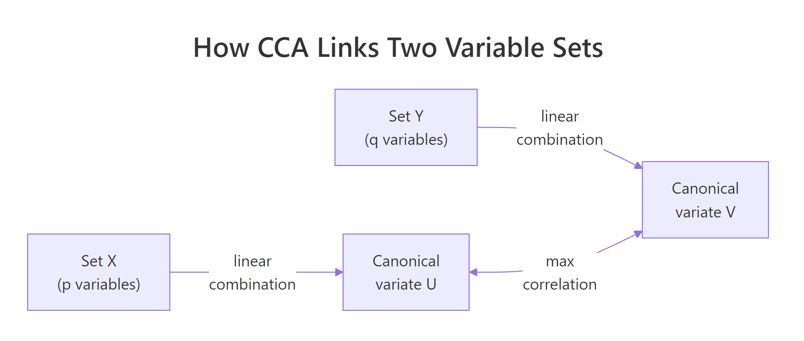
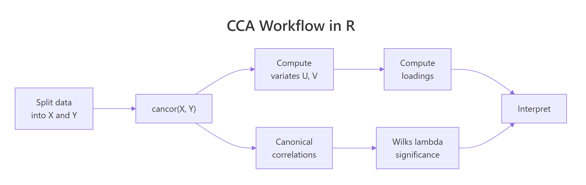

Canonical Correlation Analysis in R: CCA for Two Variable Sets
Canonical correlation analysis (CCA) finds the linear combinations of two variable sets that share the strongest possible correlation. In R, base cancor() returns those combinations, called canonical variates, along with their correlations, ready for interpretation.
What does canonical correlation analysis actually find?
Most correlation tools answer a one-to-one question: how does this variable move with that one? CCA answers a many-to-many question instead. Across two whole sets of variables, what is the single strongest pattern of co-movement? The technique mixes each set into one summary score per side, then asks how tightly those scores track each other. The pair of mixes is called a canonical variate pair, and their correlation is the canonical correlation.
Run it on the built-in LifeCycleSavings data, splitting demographic variables (pop15, pop75) on one side and economic variables (sr, dpi, ddpi) on the other. The whole analysis is one call.
Two numbers come back. The first, 0.825, is huge: it says some weighted blend of the two demographic variables tracks some weighted blend of the three economic variables almost as tightly as a clean linear relationship. The second, 0.365, is the next-strongest pattern after the first one is removed. Everything else in this tutorial is about understanding what those blends are and whether the relationship is real.
complete.cases() before calling the function so you know exactly how many observations the analysis used. A surprise change in n will distort every significance test downstream.Try it: Split LifeCycleSavings differently. Put just the savings rate (sr) on one side and the other four variables on the other side. How many canonical correlations do you get back, and why?
Click to reveal solution
Explanation: The number of canonical correlations equals min(p, q), where p and q are the column counts of the two sets. With p = 1 and q = 4, you get one correlation. With one variable on a side, CCA collapses to ordinary multiple correlation.
How do I split data into two variable sets and run cancor()?
cancor(x, y) is happy with any two matrices (or data frames coerced to matrices) that have the same number of rows. The output is a list with five named pieces. The pieces look intimidating at first, so it pays to inspect them before using them.
xcoef and ycoef are the recipes that build the canonical variates. Each column is one variate; each row is one input variable's contribution. xcenter and ycenter are the column means used to centre each set before fitting (CCA always works on centred data).
Look at column 1 of xcoef. The two coefficients have opposite signs, so the first canonical variate on the X side contrasts old population (pop75, positive) against young population (pop15, negative). Column 1 of ycoef shows sr and ddpi with negative coefficients and dpi near zero, so the matching Y variate is mostly a "low savings, low growth" score. Already, before running any extra computation, the first canonical pair is telling a story about ageing societies and slower economies.
scale(X) only changes coefficient magnitudes, never the canonical correlations or loadings. Skip the extra step.Try it: Confirm that scaling the inputs leaves the canonical correlations unchanged. Compare cancor(scale(X), scale(Y))$cor against cca$cor.
Click to reveal solution
Explanation: Canonical correlations are invariant under linear transformations of either set. Scaling each column to unit variance changes the coefficient values but rescales them inversely so the variates and their correlations stay identical.
How do I compute and read canonical variates?
A canonical variate is the actual per-row score on the canonical dimension. To compute the X-side variates, centre X and multiply by xcoef. To compute the Y-side variates, do the same with Y and ycoef. The result is one column per dimension, one row per observation.
Each column of U (and V) is mean-centred and has unit variance by construction. Row 1 has positive scores on the first variate of both sides, meaning that country sits on the "positive end" of whatever the first canonical pair represents. The point of the next step is to verify that U[, 1] and V[, 1] are paired by maximum correlation.

Figure 1: CCA finds linear combinations of each set whose correlation is as large as possible.
The two values match exactly, confirming that the first column of U and the first column of V are the canonical variate pair whose correlation is cca$cor[1]. That is the entire definition of CCA in one line of code.
Try it: Compute the correlation between U[, 1] and V[, 2]. What value do you expect, and why?
Click to reveal solution
Explanation: Canonical variates from different pairs are uncorrelated by construction. The optimisation in CCA forces each new dimension to be orthogonal to all earlier ones, so cross-pair correlations are zero up to floating-point error.
What do canonical loadings tell me?
Canonical coefficients (xcoef, ycoef) are not directly comparable across variables because they sit on whatever scale each input variable uses. A coefficient of 0.0001 on dpi and 0.16 on pop75 does not mean pop75 matters 1600 times more, it just reflects the variance differences between the columns.
The fix is canonical loadings, also called structure correlations. A loading is the plain Pearson correlation between an original variable and a canonical variate. Loadings are scale-free, so signs and magnitudes can be compared directly.
The first column tells the story. On the X side, pop15 loads strongly positive (0.978) and pop75 strongly negative (-0.940), so the first canonical variate is a "young population" axis. On the Y side, sr loads strongly negative (-0.738) and dpi modestly positive (0.397), so the matching Y variate is a "low savings, somewhat higher income" axis. Together, the first canonical pair describes a coherent demographic-economic gradient, countries with younger populations also save less.
Cross-loadings, the correlations between an original variable and the other set's variate, give the same story from a slightly different angle. They are the easiest way to see how much each input variable speaks to the opposite side.
Notice that each cross-loading equals the corresponding loading multiplied by the canonical correlation: 0.978 * 0.825 = 0.807. This is not a coincidence, it is how cross-loadings are mathematically constructed.
Try it: On the X side, which variable loads most heavily on the first canonical variate (in absolute value)?
Click to reveal solution
Explanation: pop15 has the largest absolute loading (0.978) on the first canonical variate. The variable that loads most strongly is the one that the canonical variate most closely resembles.
How do I test if the canonical correlations are significant?
A canonical correlation of 0.825 looks impressive, but with only 50 observations and several variables, some sample noise is inevitable. The standard test is Wilks' lambda, which checks the joint hypothesis that the i-th canonical correlation and all later ones are zero.
The lambda statistic combines the squared canonical correlations into a single number between 0 and 1. Smaller lambda means stronger evidence that the canonical relationship is real.
$$\Lambda_i = \prod_{j=i}^{k}(1 - \rho_j^2)$$
Bartlett's chi-square approximation turns lambda into a p-value:
$$\chi^2 = -\left(n - 1 - \frac{p+q+1}{2}\right)\ln\Lambda_i,\quad \text{df} = (p-i+1)(q-i+1)$$
Where:
- $\rho_j$ = the j-th canonical correlation
- $n$ = sample size, $p$ = ncol(X), $q$ = ncol(Y)
- $k$ =
min(p, q)= number of canonical correlations - $i$ = the dimension being tested
The whole test is short enough to write as a small R function. It returns one row per dimension with lambda, the chi-square, the degrees of freedom, and the p-value.
Both dimensions are significant at the conventional 5 percent level. Only the first dimension survives a stricter 1 percent test, which is the safer cut to use when the data set is small and the second canonical correlation is moderate.
A few assumptions deserve a quick check before you trust the test:
- Sample size: a common rule of thumb is
n≥ 20 times the number of variables in the larger set. Here,20 * 3 = 60, and the data has onlyn = 50, so the test is borderline-underpowered. - No multicollinearity within either set: check
cor(X)andcor(Y)for any pair near 0.95. - Multivariate normality: strictly required only for the Bartlett chi-square approximation, not for the canonical correlations themselves.
Try it: From the test result, which canonical dimensions are significant at α = 0.05?
Click to reveal solution
Explanation: Both rows have p-values below 0.05, so both canonical dimensions are statistically significant at the 5 percent level.
Practice Exercises
Exercise 1: CCA on state.x77 socioeconomic vs quality-of-life
Using the built-in state.x77 matrix, run a canonical correlation analysis with Income, Illiteracy, and HS Grad (socioeconomic) on one side and Life Exp, Murder, and Frost (quality-of-life) on the other. Save the canonical correlations as my_cors and the X-side loadings on the first dimension as my_xload.
Click to reveal solution
Explanation: Three canonical correlations come back because both sides have three variables. The first dimension contrasts illiterate, low-income, low-education states against the inverse, and the second dimension picks up a weaker secondary pattern.
Exercise 2: Significance test on the state.x77 CCA
Using my_cca from Exercise 1, run the Wilks lambda significance test (reuse the wilks_test() function from earlier). Count how many canonical dimensions are significant at α = 0.01 and save the count as my_sig_count.
Click to reveal solution
Explanation: The first two canonical dimensions are highly significant; the third is essentially noise. With three pairs available, two carry real signal.
Complete Example: End-to-end CCA on state.x77
The script below packages the full workflow into one block so you can lift and reuse it. It splits state.x77 into socioeconomic and quality-of-life sets, runs cancor(), computes loadings, runs the Wilks lambda test, and prints a summary of the first canonical pair.
The first canonical pair captures a coherent "deprivation gradient": states with high illiteracy and low education align with lower life expectancy, higher murder rates, and warmer climates. That whole story comes from one number (the canonical correlation, 0.926) and two interpretable loading vectors.
Summary

Figure 2: The full CCA workflow: split, fit, extract variates and loadings, test significance, interpret.
| Concept | Key takeaway |
|---|---|
| Number of correlations | min(p, q) where p and q are the column counts of each set |
| Coefficients vs loadings | Loadings (correlations with original variables) are scale-free and interpretable; coefficients are not |
| First correlation | The largest possible correlation between any two linear combinations of the sets |
| Significance | Wilks' lambda turned into a Bartlett chi-square, tested sequentially per dimension |
| Sample size rule of thumb | n ≥ 20 times the number of variables in the larger set |
| Sign convention | Canonical signs are arbitrary, interpret patterns within a variate, not absolute signs across runs |
CCA is the right tool whenever you need to summarise the relationship between two blocks of variables instead of one variable at a time. A single regression collapses everything on one side into the question "how do these predictors affect that outcome?" CCA keeps both sides intact and asks "what is the strongest pattern that links them?"
References
- R Core Team.
cancordocumentation, R Stats package. Link - UCLA OARC. Canonical Correlation Analysis | R Data Analysis Examples. Link
- Hotelling, H. (1936). "Relations between two sets of variates." Biometrika, 28(3-4), 321-377. The original CCA paper.
- Helwig, N. E. Canonical Correlation Analysis, lecture notes, University of Minnesota. Link
- Härdle, W. and Simar, L. (2015). Applied Multivariate Statistical Analysis (4th ed.), Chapter 14. Springer.
- PSU Stat 505. Lesson 13: Canonical Correlation Analysis. Link
- Belsley, D. A., Kuh, E., and Welsch, R. E. (1980). Regression Diagnostics, Wiley. The source of the
LifeCycleSavingsdataset.
Continue Learning
- PCA in R, single-set dimension reduction. CCA generalises this idea to two sets.
- Multivariate Statistics in R, the broader context of distance and correlation across many variables.
- Linear Discriminant Analysis in R, CCA's classification cousin, where one of the two sets is a group-membership indicator.